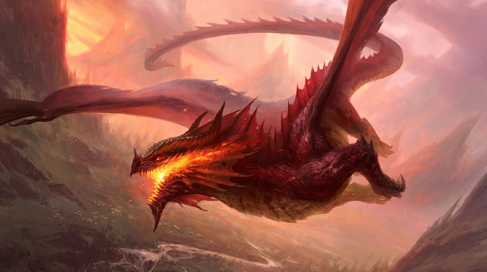
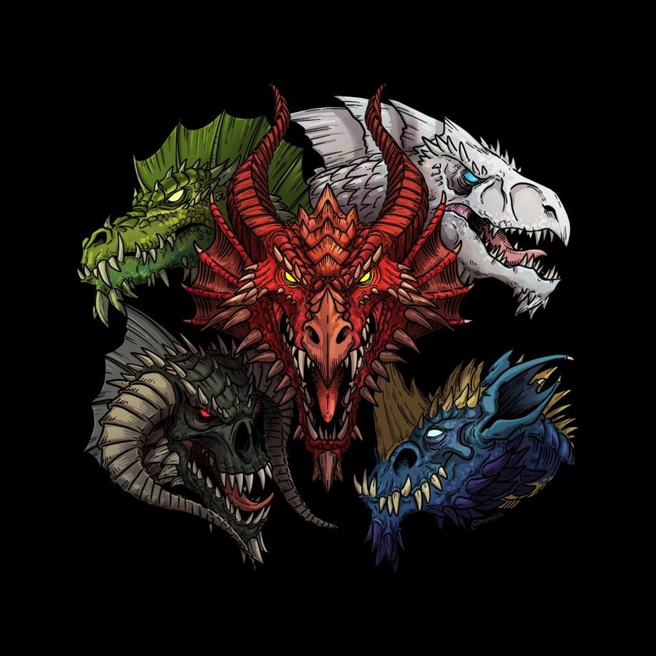

Khauth é o braço direito de Tiamat e seu mais fiel e confiavel comandante por possuir os mesmo ideiais. Khauth sempre foi o soldado mais temido no reinado anterior pois diz as lendas que ele nunca perdeu um confronto, mas em tempos de paz isso foi se perdendo. Agora nomeado a comandante, ele vai usar de todas as suas habilidades para levar Tiamat ao poder e voltar a ser o que as lendas dizem ser.

